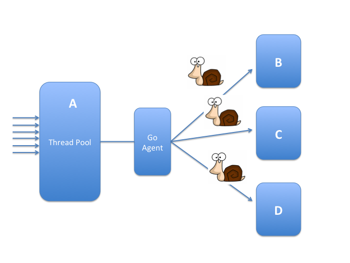

最近遇到的一个问题大概是微服务架构中经常会遇到的一个问题：
服务 A 是我们开发的系统，它的业务需要调用 B、C、D 等多个服务，这些服务是通过http的访问提供的。 问题是 B、C、D 这些服务都是第三方提供的，不能保证它们的响应时间，快的话十几毫秒，慢的话甚至1秒多，所以这些服务的Latency比较长。幸运地是这些服务都是集群部署的，容错率和并发支持都比较高，所以不担心它们的并发性能，唯一不爽的就是就是它们的Latency太高了。

系统A会从Client接收Request, 每个Request的处理都需要多次调用B、C、D的服务，所以完成一个Request可能需要1到2秒的时间。为了让A能更好地支持并发数，系统中使用线程池处理这些Request。当然这是一个非常简化的模型，实际的业务处理比较复杂。
可以预见，因为系统B、C、D的延迟，导致整个业务处理都很慢，即使使用线程池，但是每个线程还是会阻塞在B、C、D的调用上，导致I/O阻塞了这些线程， CPU利用率相对来说不是那么高。
当然在测试的时候使用的是B、C、D的模拟器，没有预想到它们的响应是那么慢，因此测试数据的结果还不错，吞吐率还可以，但是在实际环境中问题就暴露出来了。
概述
最开始线程池设置的是200,然后用HttpUrlConnection作为http client发送请求到B、C、D。当然HttpUrlConnection也有一些坑，比如Persistent Connections、Caveats of HttpURLConnection,跳出坑后性能依然不行。
通过测试，如果B、C、D等服务延迟接近0毫秒，则HttpUrlConnection的吞吐率(线程池的大小为200)能到40000 requests/秒,但是随着第三方服务的响应时间变慢，它的吞吐率急剧下降，B、C、D的服务的延迟为100毫秒的时候，则HttpUrlConnection的吞吐率降到1800 requests/秒，而B、C、D的服务的延迟为100毫秒的时候HttpUrlConnection的吞吐率降到550 requests／秒。
增加http.maxConnections系统属性并不能显著增加吞吐率。
如果增加调用HttpUrlConnection的线程池的大小，比如增加到2000，性能会好一些，但是B、C、D的服务的延迟为500毫秒的时候，吞吐率为3800 requests/秒，延迟为1秒的时候，吞吐率为1900 requests/秒。
虽然线程池的增大能带来性能的提升，但是线程池也不能无限制的增大，因为每个线程都会占用一定的资源，而且随着线程的增多，线程之间的切换也更加的频繁，对CPU等资源也是一种浪费。
切换成netty(channel pool)，与B、C、D通讯的性能还不错， latency为500ms的时候吞吐率能达到10000 requests/秒，通讯不成问题，问题是需要将业务代码改成异步的方式，异步地接收到这些response后在一个线程池中处理这些消息。
下面列出了一些常用的http client:
- JDK’s URLConnection uses traditional thread-blocking I/O.
- Apache HTTP Client uses traditional thread-blocking I/O with thread-pools.
- Apache Async HTTP Client uses NIO.
- Jersey is a ReST client/server framework; the client API can use several HTTP client backends including URLConnection and Apache HTTP Client.
- OkHttp uses traditional thread-blocking I/O with thread-pools.
- Retrofit turns your HTTP API into a Java interface and can use several HTTP client backends including Apache HTTP Client.
- Grizzly is network framework with low-level HTTP support; it was using NIO but it switched to AIO .
- Netty is a network framework with HTTP support (low-level), multi-transport, includes NIO and native (the latter uses epoll on Linux).
- Jetty Async HTTP Client uses NIO.
- Async HTTP Client wraps either Netty, Grizzly or JDK’s HTTP support.
- clj-http wraps the Apache HTTP Client.
- http-kit is an async subset of clj-http implemented partially in Java directly on top of NIO.
- http async client wraps the Async HTTP Client for Java.
这个列表摘自 High-Concurrency HTTP Clients on the JVM,不止于此，这篇文章重点介绍基于java纤程库quasar的实现的http client库，并比较了性能。我们待会再说。
回到我前面所说的系统，如何能更好的提供性能？有一种方案是借助其它语言的优势，比如Go，让Go来代理完成和B、C、D的请求，系统A通过一个TCP连接与Go程序交流。第三方服务B、C、D的Response结果可以异步地返回给系统A。

Go的优势在于可以实现request-per-goroutine,整个系统中可以有成千上万个goroutine。 goroutine是轻量级的，而且在I/O阻塞的时候可以不占用线程，这让Go可以轻松地处理上万个链接，即使I/O阻塞也没问题。Go和Java之间的通讯协议可以通过Protobuffer来实现，而且它们之间只保留一个TCP连接即可。
当然这种架构的修改带来系统稳定性的降低，服务A和服务B、C、D之间的通讯增加了复杂性。同时，因为是异步方式，服务A的业务也要实现异步方式，否则200个线程依然等待Response的话，还是一个阻塞的架构。
通过测试，这种架构可以带来稳定的吞吐率。 不管服务B、C、D的延迟有多久，A的吞吐率能维持15000 requests/秒。当然Go到B、C、D的并发连接数也有限制，我把最大值调高到20000。
这种曲折的方案的最大的两个弊病就是架构的复杂性以及对原有系统需要进行大的重构。 高复杂性带来的是系统的稳定性的降低，包括部署、维护、网络状况、系统资源等。同时系统要改成异步模型，因为系统业务线程发送Request后不能等待Go返回Response,它需要从Client接收更多的Request,而收到Response之后它才继续执行剩下的业务，只有这样才不会阻塞，进而提到系统的吞吐率。
将系统A改成异步，然后使用HttpUrlConnection线程池行不行？
HttpUrlConnection线程池还是导致和B、C、D通讯的吞吐率下降，但是Go这种方案和B、C、D通讯的吞吐率可以维持一个较高的水平。
考虑到Go的优势，那么能不能在Java中使用类似Go的这种goroutine模型呢？那就是本文要介绍的Java纤程库: ［Quasar](http://docs.paralleluniverse.co/quasar/)。
实际测试结果表明Go和Netty都是两种比较好的解决方案，而且Netty的性能惊人的好，不好的地方正如前面所讲，我们需要将代码改成异步的处理。线程池中的业务单元用Netty发送完Request之后，不要等待Response, Response的处理交给另外的线程来处理，同时注意不要在Netty的Handler里面处理业务逻辑。要解决的问题就变成如何更高效的处理Response了，而不是第三方系统阻塞的问题。
quasar初步
以下介绍Java的另一个解决方案，也就是Java中的coroutine库，因为最近刚刚看这个库，感觉挺不错的，而且用它替换Thread改动较少。
Java官方并没有纤程库。但是伟大的社区提供了一个优秀的库，它就是Quasar。
创始人是Ron Pressler和Dafna Pressler,由Y Combinator孵化。
Quasar is a library that provides high-performance lightweight threads, Go-like channels, Erlang-like actors, and other asynchronous programming tools for Java and Kotlin.
Quasar提供了高性能轻量级的线程，提供了类似Go的channel，Erlang风格的actor，以及其它的异步编程的工具，可以用在Java和Kotlin编程语言中。Scala目前的支持还不完善，我想如果这个公司能快速的发展壮大，或者被一些大公司收购的话，对Scala的支持才能提上日程。
你需要把下面的包加入到你的依赖中：
- Core (必须) co.paralleluniverse:quasar-core:0.7.5[:jdk8] (对于 JDK 8，需要增加jdk8 classifier)
- Actor co.paralleluniverse:quasar-actors:0.7.5
- Clustering co.paralleluniverse:quasar-galaxy:0.7.5
- Reactive Stream co.paralleluniverse:quasar-reactive-streams:0.7.5
- Kotlin co.paralleluniverse:quasar-kotlin:0.7.5
Quasar fiber依赖java instrumentation修改你的代码，可以在运行时通过java Agent实现，也可以在编译时使用ant task实现。
通过java agent很简单，在程序启动的时候将下面的指令加入到命令行：
|
|
对于maven来说，你可以使用插件maven-dependency-plugin,它会为你的每个依赖设置一个属性，以便在其它地方引用，我们主要想使用 ${co.paralleluniverse:quasar-core:jar}:
|
|
然后你可以配置exec-maven-plugin或者maven-surefire-plugin加上agent参数，在执行maven任务的时候久可以使用Quasar了。
官方提供了一个Quasar Maven archetype,你可以通过下面的命令生成一个quasar应用原型：
|
|
如果你使用gradle，可以看一下gradle项目模版：Quasar Gradle template project。
最容易使用Quasar的方案就是使用Java Agent,它可以在运行时instrument程序。如果你想编译的时候就使用AOT instrumentation(Ahead-of-Time)，可以使用Ant任务co.paralleluniverse.fibers.instrument.InstrumentationTask，它包含在quasar-core.jar中。
Quasar最主要的贡献就是提供了轻量级线程的实现，叫做fiber(纤程)。Fiber的功能和使用类似Thread, API接口也类似，所以使用起来没有违和感，但是它们不是被操作系统管理的，它们是由一个或者多个ForkJoinPool调度。一个idle fiber只占用400字节内存，切换的时候占用更少的CPU，你的应用中可以有上百万的fiber，显然Thread做不到这一点。这一点和Go的goroutine类似。
Fiber并不意味着它可以在所有的场景中都可以替换Thread。当fiber的代码经常会被等待其它fiber阻塞的时候，就应该使用fiber。
对于那些需要CPU长时间计算的代码，很少遇到阻塞的时候，就应该首选thread
以上两条是选择fiber还是thread的判断条件，主要还是看任务是I/O blocking相关还是CPU相关。幸运地是，fiber API使用和thread使用类似，所以代码略微修改久就可以兼容。
Fiber特别适合替换哪些异步回调的代码。使用FiberAsync异步回调很简单，而且性能很好，扩展性也更高。
类似Thread, fiber也是用Fiber类表示：
|
|
与Thread类似，但也有些不同。Fiber可以有一个返回值,类型为泛型V，也可以为空Void。run也可以抛出异常InterruptedException。
你可以传递SuspendableRunnable 或 SuspendableCallable 给Fiber的构造函数:
|
|
甚至你可以调用Fiber的join方法等待它完成，调用get方法得到它的结果。
Fiber继承Strand类。Strand类代表一个Fiber或者Thread，提供了一些底层的方法。
逃逸的Fiber(Runaway Fiber)是指那些陷入循环而没有block、或者block fiber本身运行的线程的Fiber。偶尔有逃逸的fiber没有问题，但是太频繁会导致性能的下降，因为需要调度器的线程可能都忙于逃逸fiber了。Quasar会监控这些逃逸fiber,你可以通过JMX监控。如果你不想监控，可以设置系统属性co.paralleluniverse.fibers.detectRunawayFibers为false。
fiber中的ThreadLocal是fiber local的。InheritableThreadLocal继承父fiber的值。
Fiber、SuspendableRunnable 、SuspendableCallable 的run方法会抛出SuspendExecution异常。但这并不是真正意义的异常，而是fiber内部工作的机制，通过这个异常暂停因block而需要暂停的fiber。
任何在Fiber中运行的方法，需要声明这个异常(或者标记@Suspendable),都被称为suspendable method。
反射调用通常都被认为是suspendable, Java8 lambda 也被认为是suspendable。不应该将类构造函数或类初始化器标记为suspendable。
synchronized语句块或者方法会阻塞操作系统线程，所以它们不应该标记为suspendable。Blocking线程调用默认也不被quasar允许。但是这两种情况都可以被quasar处理，你需要在Quasar javaagent中分别加上m和b参数，或者ant任务中加上allowMonitors和allowBlocking属性。
quasar原理
Quasar最初fork自Continuations Library。
如果你了解其它语言的coroutine, 比如Lua,你久比较容易理解quasar的fiber了。 Fiber实质上是 continuation， continuation可以捕获一个计算的状态，可以暂停当前的计算，等隔一段时间可以继续执行。Quasar通过instrument修改suspendable方法。Quasar的调度器使用ForkJoinPool调度这些fiber。
Fiber调度器FiberScheduler是一个高效的、work-stealing、多线程的调度器。
默认的调度器是FiberForkJoinScheduler,但是你可以使用自己的线程池去调度，请参考FiberExecutorScheduler。
当一个类被加载时，Quasar的instrumentation模块 (使用 Java agent时) 搜索suspendable 方法。每一个suspendable 方法 f通过下面的方式 instrument:
它搜索对其它suspendable方法的调用。对suspendable方法g的调用，一些代码会在这个调用g的前后被插入，它们会保存和恢复fiber栈本地变量的状态，记录这个暂停点。在这个“suspendable function chain”的最后，我们会发现对Fiber.park的调用。park暂停这个fiber，扔出 SuspendExecution异常。
当g block的时候，SuspendExecution异常会被Fiber捕获。 当Fiber被唤醒(使用unpark), 方法f会被调用， 执行记录显示它被block在g的调用上，所以程序会立即跳到f调用g的那一行,然后调用它。最终我们会到达暂停点，然后继续执行。当g返回时， f中插入的代码会恢复f的本地变量。
过程听起来很复杂，但是它只会带来3% ~ 5%的性能的损失。
下面看一个简单的例子, 方法m2声明抛出SuspendExecution异常，方法m1调用m2和m3,所以也声明抛出这个异常，最后这个异常会被Fiber所捕获：
|
|
反编译这段代码 (一般的反编译软件如jd-gui不能把这段代码反编译java文件，Procyon虽然能反编译，但是感觉反编译有错。所以我们还是看字节码吧)：
|
|
这段反编译的代码显示了方法m被instrument后的样子，虽然我们不能很清楚的看到代码执行的样子，但是也可以大概地看到它实际在方法的最开始加入了此方法的栈信息的检查（＃0 ～ ＃49，如果是第一次运行这个方法，则直接运行，
然后在一些暂停点上加上一些栈压入的处理，并且可以在下次执行的时候直接跳到上次的暂停点上。
官方的工程师关于Quasar的instrument操作如下：
- Fully analyze the bytecode to find all the calls into suspendable methods. A method that (potentially) calls into other suspendable methods is itself considered suspendable, transitively.
- Inject minimal bytecode in suspendable methods (and only them) that will manage an user-mode stack, in the following places:
- At the beginning we’ll check if we’re resuming the fiber and only in this case we’ll jump into the relevant bytecode index.
- Before a call into another suspendable method we’ll push a snapshot of the current activation frame, including the resume bytecode index; we can do it because we know the structure statically from the analysis phase.
- After a call into another suspendable method we’ll pop the top activation frame and, if resumed, we’ll restore it in the current fiber.
我并没有更深入的去了解Quasar的实现细节以及调度算法，有兴趣的读者可以翻翻它的代码。如果你有更深入的剖析，请留下相关的地址，以便我加到参考文档中。
曾经， 陆陆续续也有一些Java coroutine的实现(coroutine-libraries), 但是目前来说最好的应该还是Quasar。
Oracle会实现一个官方的纤程库吗？目前来说没有看到这方面的计划，而且从Java的开发进度上来看，这个特性可能是遥遥无期的，所以目前还只能借助社区的力量，从第三方库如Quasar中寻找解决方案。
更多的Quasar知识，比如Channel、Actor、Reactive Stream 的使用可以参考官方的文档，官方也提供了多个例子。
Comsat介绍
Comsat又是什么？
Comsat还是Parallel Universe提供的集成Quasar的一套开源库，可以提供web或者企业级的技术，如HTTP服务和数据库访问。
Comsat并不是一套web框架。它并不提供新的API,只是为现有的技术如Servlet、JAX－RS、JDBC等提供Quasar fiber的集成。
它包含非常多的库，比如Spring、ApacheHttpClient、OkHttp、Undertow、Netty、Kafka等。
性能对比
刘小溪在CSDN上写了一篇关于Quasar的文章：次时代Java编程（一）：Java里的协程，写的挺好，建议读者读一读。
它参考Skynet的测试写了代码进行对比，这个测试是并发执行整数的累加：
测试结果是Golang花了261毫秒，Quasar花了612毫秒。其实结果还不错，但是文中指出这个测试没有发挥Quasar的性能。因为quasar的性能主要在于阻塞代码的调度上。
虽然文中加入了排序的功能，显示Java要比Golang要好，但是我觉得这又陷入了另外一种错误的比较， Java的排序算法使用TimSort，排序效果相当好，Go的排序效果显然比不上Java的实现，所以最后的测试主要测试排序算法上。 真正要体现Quasar的性能还是测试在有阻塞的情况下fiber的调度性能。
HttpClient
话题扯的越来越远了，拉回来。我最初的目的是要解决的是在第三方服务响应慢的情况下提高系统 A 的吞吐率。最初A是使用200个线程处理业务逻辑，调用第三方服务。因为线程总是被第三方服务阻塞，所以系统A的吞吐率总是很低。
虽然使用Go可以解决这个问题，但是对于系统A的改造比较大，还增加了系统的复杂性。Netty性能好，改动量还可以接受，但是不妨看一下这个场景，系统的问题是由http阻塞引起。
这正是Quasar fiber适合的场景，如果一个Fiber被阻塞，它可以暂时放弃线程，以便线程可以用来执行其它的Fiber。虽然整个集成系统的吞吐率依然很低，这是无法避免的，但是系统的吞吐率确很高。
Comsat提供了Apache Http Client的实现： FiberHttpClientBuilder：
|
|
然后在Fiber中久可以调用:
|
|
你也可以使用异步的HttpClient:
|
|
Comsat还提供了Jersey Http Client: AsyncClientBuilder.newClient()。
甚至提供了Retrofit、OkHttp的实现。
经过测试，虽然随着系统B、C、D的响应时间的拉长，吞吐率有所降低，但是在latency为100毫秒的时候吞吐率依然能达到9900 requests/秒，可以满足我们的需求，而我们的代码改动的比较小。
综上所述，如果想彻底改造系统A,则可以使用Go库重写，或者使用Netty + Rx的方式去处理，都能达到比较好的效果。如果想改动比较小，可以考虑使用quasar替换线程对代码进行维护。
我希望本文不要给读者造成误解，以为Java NIO／Selector这种方式不能解决本文的问题，也就是第三方阻塞的问题。 事实上Java NIO也正是适合解决这样的问题， 比如Netty性能就不错，但是你需要小心的是， 不要让你的这个client对外又变成阻塞的方式，而是程序应该异步的去发送request和处理response。当然本文重点不是介绍这种实现，而是介绍Java的线程库，它可以改造传统的代码，即使有阻塞，也只是阻塞Fiber，而不是阻塞线程，这是另一个解决问题的思路。
另一篇关于Quasar的文档： 继续了解Java的纤程库 - Quasar
参考文档
- http://docs.paralleluniverse.co/quasar/
- http://docs.paralleluniverse.co/comsat/
- http://geek.csdn.net/news/detail/71824
- http://stackoverflow.com/questions/24722233/how-to-use-quasar-with-scala-under-sbt
- http://blog.kazaff.me/2016/05/29/了解协程(coroutine)/
- http://tieba.baidu.com/p/4244920191
- http://javapapers.com/core-java/java-instrumentation/
- https://docs.oracle.com/javase/8/docs/api/java/lang/instrument/package-summary.html
- http://zeroturnaround.com/rebellabs/what-are-fibers-and-why-you-should-care/